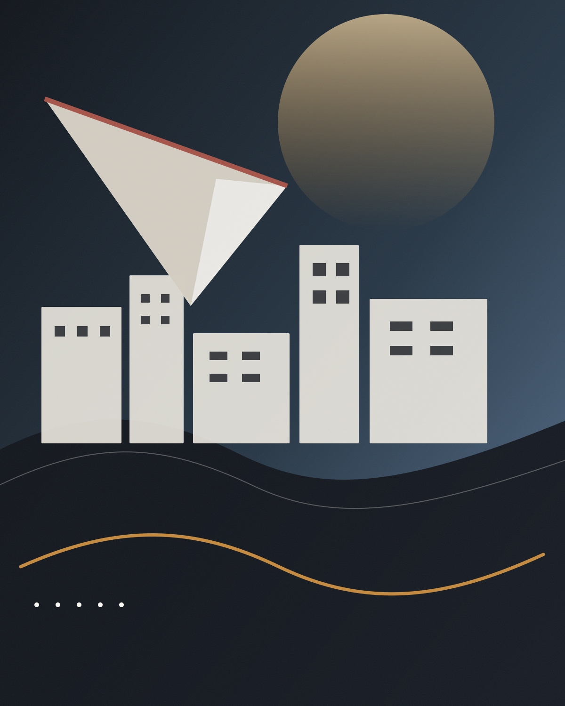
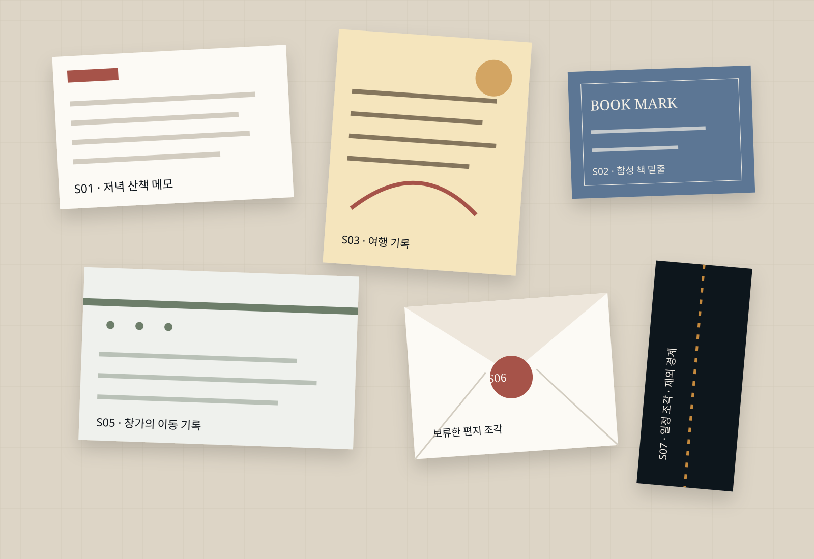
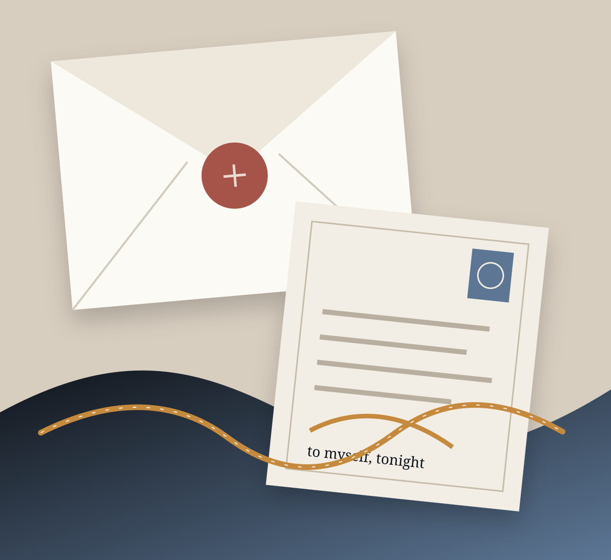

개인 메모 · 합성
비 오는 날의 광주 산책
“익숙한 길이 낯설어지는 순간”을 오프닝 문장으로 포함
오늘의 오디오 편지 · 2026.07.27
오래 저장해 둔 도시·책·여행 기록을 한 사람의 저녁을 위한 18분 40초짜리 듣는 편지로 엮었습니다.

출처 구성 도시 산책 메모 2 · 여행 북마크 2 · 책 밑줄 2 · 개인 일정 조각 1
경계 실제 TTS·재생·업로드·저장 기능 없음
02 / 05
06:18 / 18:40
현재 챕터
“오래 저장한 여행 메모를 다시 펼치면, 목적지보다 그때 걸었던 속도가 먼저 돌아옵니다. 오늘은 그 속도를 따라 도시의 가장 조용한 모서리를 걷습니다.”
출처 03 합성 메모 · 「리스본 골목의 오후」 · 2024.09.17
저녁을 위한 문장00:00–03:42
도시는 기억보다 느리다03:42–07:10
책갈피에 남은 기차07:10–11:58
다음 여행을 미루는 법11:58–15:46
나에게 남기는 끝문장15:46–18:40
검토용 정적 화면입니다. 실제 오디오 재생·스트리밍은 구현하지 않았습니다.
Source Shelf · synthetic provenance
각 조각은 어디에서 왔고, 왜 포함되었는지 보입니다. 출처를 감추지 않고, 포함하지 않은 경계도 함께 남깁니다.

개인 메모 · 합성
“익숙한 길이 낯설어지는 순간”을 오프닝 문장으로 포함
책 밑줄 · 합성
도시 기억에 관한 문장 2개를 맥락과 함께 반영
여행 기록 · 합성
현재 챕터의 중심 장면과 시간 표기
개인 일정 · 합성
가격·예약 정보는 검증되지 않아 구체 수치를 원고에서 제외
Episode Script · source-linked reading copy
저녁 산책을 시작할 때, 익숙한 길은 낮과 다른 표정을 보여줍니다. 오늘의 편지는 오래 저장해 둔 도시 기록에서 출발합니다.
여행 메모에는 목적지보다 사소한 속도가 많이 남아 있습니다. 리스본의 한 골목에서 나는 지도보다 늦게 걸었고, 그때 처음으로 도시가 나를 기다릴 수 있다는 생각을 했습니다.
[윤슬 · 한 박자 쉬고] 지금 걷는 길에서도 비슷한 모서리가 보이는지 천천히 둘러보세요.
책의 한 문장은 도시가 건물의 집합이 아니라 반복해서 되돌아오는 기억의 방식이라고 적고 있습니다. 이 문장을 사실 주장으로 확대하지 않고, 오늘의 개인적 해석으로만 읽습니다.

Audio Letter · single fictional voice
2026년 7월의 마지막 월요일 밤
오늘은 새로운 정보를 더하지 않아도 괜찮습니다. 오래 저장해 두고 한 번도 다시 읽지 않은 기록을, 지금의 속도로 천천히 들어보세요.
당시에는 중요하지 않았던 문장이 오늘의 당신에게는 작은 방향이 될 수 있습니다. 그 방향이 정확한 답이라고 말하지 않고, 다만 한 번 더 걷게 하는 문장으로 남겨 둡니다.
“다음 여행은 멀리 가는 일이 아니라, 이미 가진 기록을 다른 속도로 다시 만나는 일일지도 모릅니다.”
Channel Archive · recurring listening moments
성과 지표가 아니라, 언제 어떤 마음으로 들었는지를 중심으로 반복 에디션을 보관합니다.
도시·책·여행 기록 · 18:40
미청취 · synthetic listening history일정 조각과 지난주 메모
2026.07.20 · 완독 기록도 합성책 밑줄과 보류한 편지
2026.07.12 · synthetic여행 기록과 사진 메모
2026.06.28 · synthetic일정과 보류 목록
2026.06.09 · syntheticMobile composition · 390px target
데스크톱을 축소하지 않고, 표지·현재 챕터·원고·다음 챕터만 한 줄의 청취 흐름으로 다시 구성합니다.
SYNTHETIC EDITION
“여행 메모를 다시 펼치면 목적지보다 걸었던 속도가 먼저 돌아옵니다.”
출처 03 · 합성 여행 기록책갈피에 남은 기차